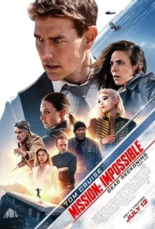

Mission Impossible — Reckoning Part 7
IMF agent Ethan Hunt embarks on a mission involving a powerful AI called the Entity, which has gained sentience and infiltrated global defense, intelligence, and financial networks. Ethan aims to destroy the Entity and secure a crucial key related to it. Ethan teams up with colleagues Benji and Luther to intercept the other half of the key. As the narrative unfolds, Ethan and his team confront Gabriel on a train.
The conflict involves battles, betrayals, and the fate of the complete key, which can control or destroy the Entity. The team works to prevent Gabriel from gaining the upper hand and securing the key's power. Grace decides to side with the IMF, Ethan thwarts Gabriel's plans, and the Entity's threat is neutralized. The plot combines espionage, action, and intrigue as Ethan and his team navigate a complex web of alliances and dangers to protect global security.
